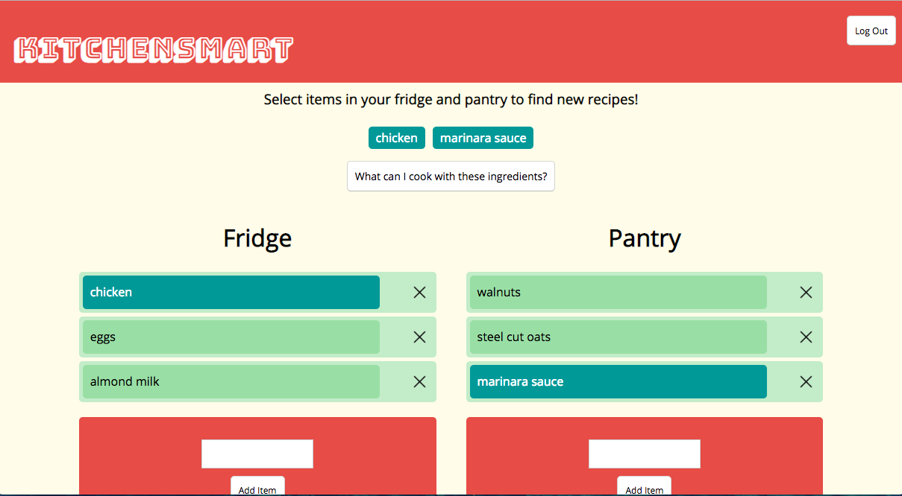

About
I am an Arizona native currently living in Chicago, IL! And, yes, I am still getting used to the weather.
My professional background includes sustainable agriculture, engineering, and web development. As an engineer and developer, I am motivated by working with passionate people toward solutions that can impact our everyday lives. I get excited when I see a project with an important mission successfully come to fruition.
When I'm not programming, I am performing improv at The Second City or enjoying a run along the lake. You can also catch me in plaid in this pizza commercial from my other life as an actress.
I am currently seeking a position in web development or software engineering. Feel free to contact me via email at edunn227@gmail.com .
Recent Work
KitchenSmart
Discover new recipes too cook with ingredients you already have to save money and reduce waste.
HTML5 || CSS || JavaScript || AJAX || Node.js || Express || React & Redux || Mongoose || Chai-Http
